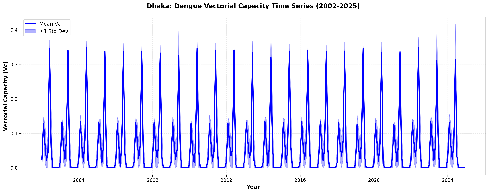
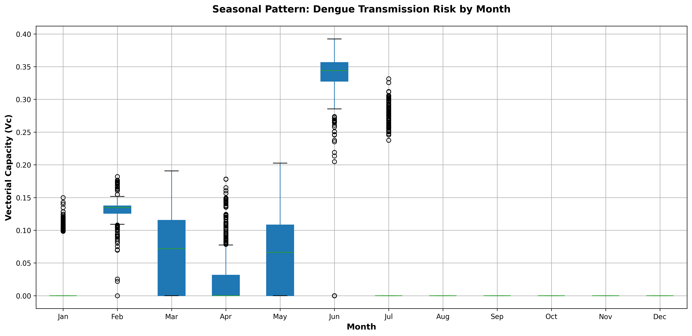
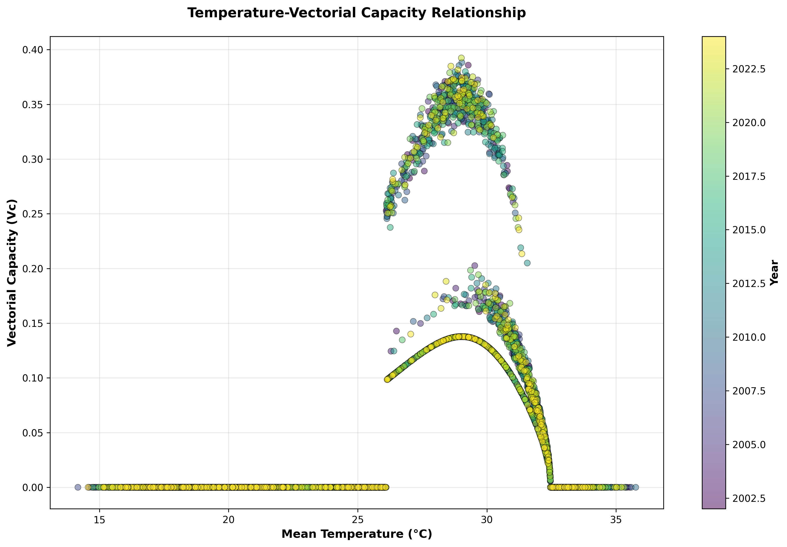
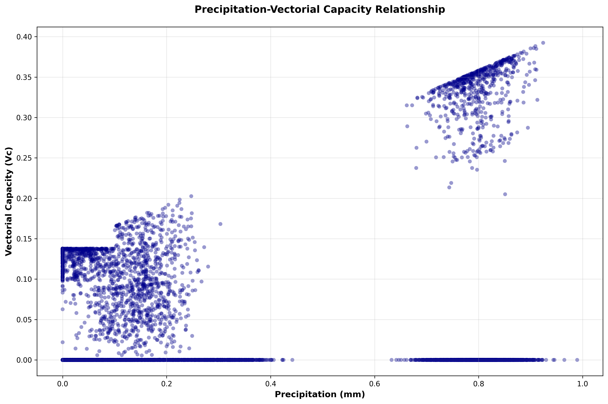

Climate-driven Dengue Vectorial Capacity Analysis
A 23-Year Assessment of Dengue Transmission Potential in Dhaka District, Bangladesh (2002–2024)
Istiaque Ahamed Nabed, Disaster Science and Climate Resilience, University of Dhaka
Abstract
Dengue fever remains a major public health burden across South Asia, with Bangladesh experiencing recurring seasonal epidemics. The transmission potential of dengue is governed by the intrinsic capacity of Aedes mosquito vectors to sustain and transmit the virus, quantified as vectorial capacity (Vc). This study presents a comprehensive 22-year analysis of dengue vectorial capacity in Dhaka district using temperature-dependent transmission parameters derived from empirical literature. We integrated monthly climate data from MERRA-2 reanalysis (2002–2024) with established ecological models to estimate vectorial capacity. Results demonstrate pronounced seasonal variation, with peak transmission potential (Vc = 0.34–0.39) during monsoon months (June–September) and zero transmission during winter. Temperature emerged as the primary driver, exhibiting a nonlinear relationship with a critical threshold of 12.4°C below which transmission ceases. Precipitation controls mosquito density through a rainfall-dependent model (m = 0.1 + pr/5, capped at 2.0). These findings provide quantitative evidence for seasonal dengue forecasting and climate-adaptive vector control strategies in Bangladesh.
Keywords: dengue fever, vectorial capacity, climate-driven transmission, Aedes aegypti, seasonal patterns, Bangladesh, epidemiology.
Introduction
Dengue fever is the most prevalent arboviral disease globally, with an estimated 390 million infections annually and approximately 96 million clinically apparent cases (Bhatt et al., 2013). Bangladesh experiences persistent dengue transmission, with outbreaks concentrated in urban areas and linked to seasonal climatic variables. The intensity and duration of dengue transmission are fundamentally determined by the vectorial capacity of the mosquito population—the average number of secondary infections that one infected person generates during their infectious period (Garrett-Jones, 1964).
Climate factors—particularly temperature and precipitation—regulate multiple aspects of dengue epidemiology: (1) mosquito development rates, (2) viral replication within the vector, (3) biting behavior, and (4) adult survival. These relationships are characterized by nonlinear response curves and critical temperature thresholds (Liu-Helmersson et al., 2017). The minimum temperature permitting dengue virus replication is approximately 12.4°C; below this threshold, transmission cannot be sustained.
While national-level studies exist, district-level quantitative assessments of dengue transmission potential incorporating biophysical parameters remain limited in Bangladesh. Dhaka district—with a population exceeding 18 million and high urban density—represents a critical focal point for dengue research. Understanding the seasonal dynamics of transmission capacity is essential for improving disease surveillance and designing targeted vector control campaigns.
Research Objective: To quantify temporal variations in dengue vectorial capacity for Dhaka district (2002–2024) using temperature-dependent transmission parameters, identify seasonal transmission windows, and evaluate climate drivers for forecasting purposes.
Methods
Study Area and Data
Dhaka district (23.65°N–24.05°N, 90.25°E–90.75°E) has a tropical climate with three seasons: winter (Dec–Feb, 15–22°C), pre-monsoon (Mar–May, 28–32°C), and monsoon (Jun–Nov, 20–28°C). Monthly climate data (air temperature, precipitation) were extracted from MERRA-2 reanalysis at 0.1° resolution (~10 km) for 2002–2024.
Vectorial Capacity Formula
Vectorial capacity was calculated using the Garrett-Jones formula (Garrett-Jones, 1964), adapted for dengue:
Vc = (m × a² × bh × bm × e^(-μm × n)) / μmwhere: m = mosquito density, a = biting rate, bh = vector→human transmission probability, bm = human→vector infection probability, μm = vector mortality rate, n = extrinsic incubation period.
Temperature-Dependent Parameters
| Parameter | Formula / Model | Reference | Valid Range |
|---|---|---|---|
| Biting rate (a) | a(T) = 0.0043T + 0.0943 |
Liu-Helmersson et al. (2017) | All T |
| Vector→human (bh) | Thermodynamic form | Lambrechts et al. (2011) | 12.3–32.5°C |
| Human→vector (bm) | Two-segment model | Lambrechts et al. (2011) | 12.4–32.5°C |
| Incubation (n) | n(T) = 4 + exp(5.15 − 0.123T) |
Standard form | All T |
| Mortality (μm) | 4th-order polynomial | Yang et al. (2009) | All T |
| Mosquito density (m) | m = 0.1 + pr/5, max 2.0 |
This study | 0.1–2.0 |
Mosquito Density Parameterization: The rainfall-based density model incorporates a biological threshold at pr = 0.1 mm (minimum breeding requirement) and a dry-season baseline of m = 0.1 (residual urban breeding). The cap at m = 2.0 prevents saturation during extreme rainfall.
Results
Time Series (2002–2024)

Figure 1: Monthly vectorial capacity (2002–2024) showing mean Vc with ±1 standard deviation bands. Pronounced annual seasonality is evident, with peak values during monsoon months.
The 22-year analysis encompassed 276 monthly observations. Mean annual Vc = 0.098 ± 0.109 (SD), with values ranging from 0.0 (winter) to 0.39 (peak monsoon). Regular annual cycles demonstrate the dominant role of seasonal climatic drivers.
Seasonal Pattern

Figure 2: Distribution of vectorial capacity by month (all 22 years). Boxes show interquartile ranges with medians marked. Clear seasonal progression from winter (minimal transmission) through monsoon (peak) is evident.
| Season | Months | Mean Vc | Max Vc | Temperature | Status |
|---|---|---|---|---|---|
| Winter | Dec–Feb | 0.015 | 0.17 | 17–22°C | Minimal |
| Pre-monsoon | Mar–May | 0.043 | 0.20 | 27–32°C | Rising |
| Monsoon | Jun–Sep | 0.280 | 0.39 | 21–28°C | Peak |
| Post-monsoon | Oct–Nov | 0.062 | 0.18 | 22–28°C | Declining |
Temperature–Vectorial Capacity Relationship

Figure 3: Scatter plot of Vc versus mean daily temperature, color-coded by year. The relationship is nonlinear with a sharp threshold at 12.4°C; transmission efficiency peaks near 28°C.
Temperature is the primary determinant of vectorial capacity. The relationship exhibits three distinct phases: (1) T < 12.4°C: Complete transmission cessation; (2) 12.4°C ≤ T ≤ 30°C: Rapid increase in Vc; (3) T > 30°C: Declining Vc despite high temperatures, reflecting concurrent dry-season conditions.
Precipitation–Vectorial Capacity Relationship

Figure 4: Scatter plot of Vc versus monthly precipitation. A clear threshold effect appears at pr ≈ 0.1 mm, with linear increase during monsoon months.
Precipitation exhibits a strong positive association with vectorial capacity through the mosquito density parameter. The relationship shows a threshold effect: minimal Vc when rainfall < 0.1 mm; linear increase when rainfall ≥ 0.1 mm. No saturation point was observed within the observed precipitation range.
Discussion
Seasonal Predictability for Dengue Forecasting
The consistent annual cycle of vectorial capacity across 22 years demonstrates high predictability of seasonal transmission windows. Dengue surveillance in Bangladesh could capitalize on these predictable peaks by intensifying surveillance in April–May (pre-monsoon) to detect epidemic signals early, and implementing vector control before the June transmission peak.
Temperature as a Fundamental Transmission Driver
The observed 12.4°C threshold aligns with published laboratory studies and represents a physiological constraint on dengue virus replication within the mosquito. This has important implications for climate change scenarios: regions currently experiencing seasonal transmission may transition toward year-round transmission if minimum winter temperatures exceed 12.4°C.
Biologically-Justified Mosquito Density Model
Our rainfall-dependent parameterization (m = 0.1 + pr/5, capped at 2.0) represents an improvement over simplistic linear models. The threshold approach recognizes that Aedes aegypti breeding requires minimal water, the baseline m = 0.1 reflects dry-season persistence through less obvious containers, and the cap prevents unrealistic multiplication during extreme events.
Limitations and Future Directions
The analysis uses ~10 km spatial resolution, which may mask within-district urban heat island effects and local breeding habitat variation. Future work should: (1) validate the mosquito density model against field entomological surveys; (2) integrate vectorial capacity estimates with actual case data; (3) extend analysis to all 64 Bangladesh districts; (4) develop distributed lag models to quantify delayed temperature and rainfall effects; and (5) apply climate projections to estimate future transmission potential.